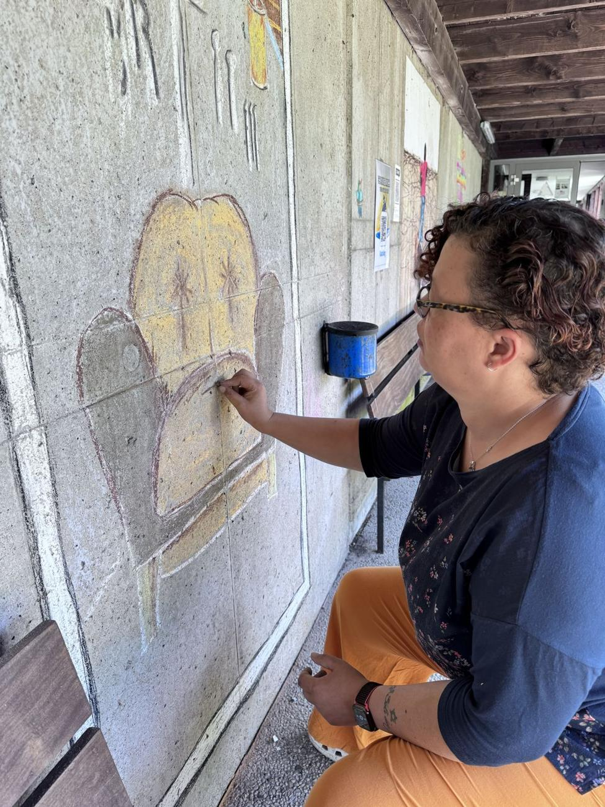
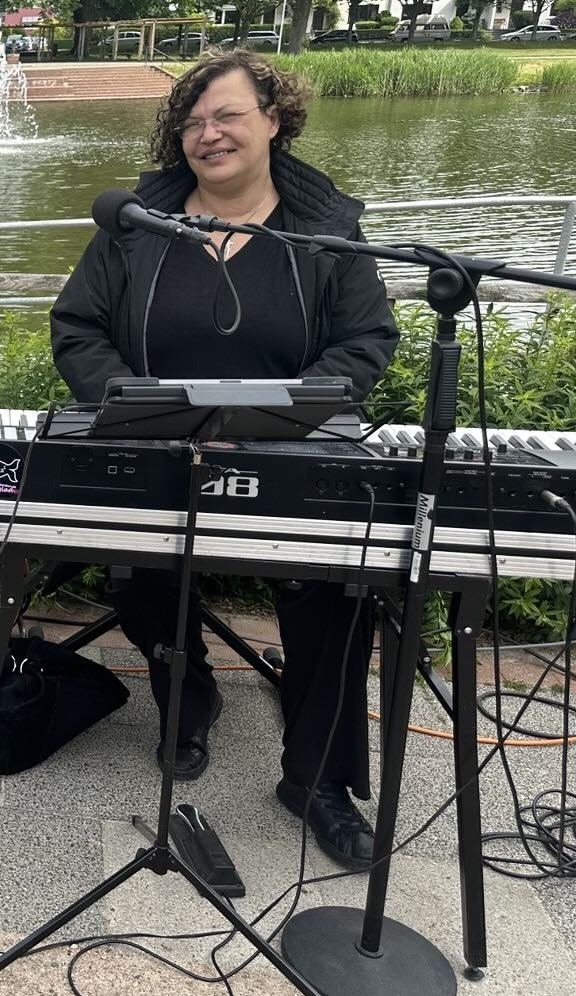
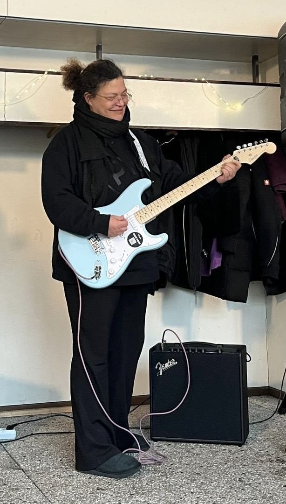
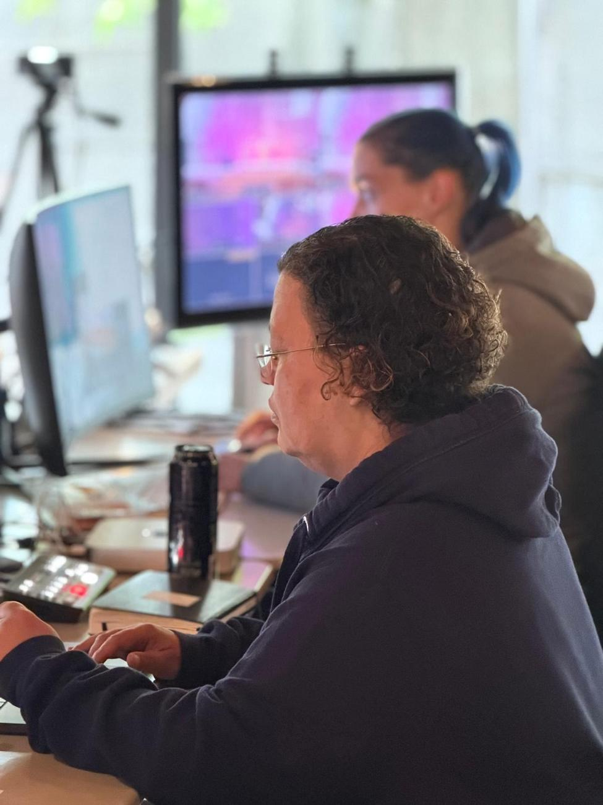
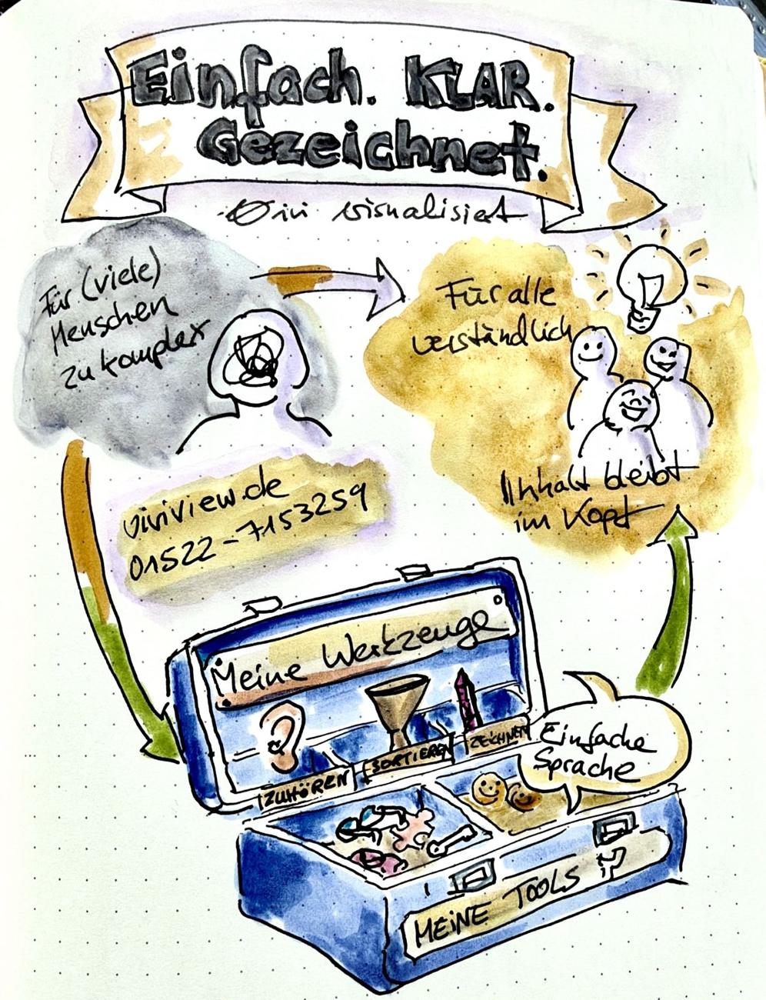
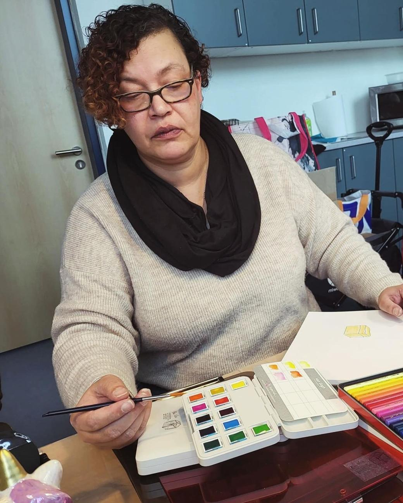
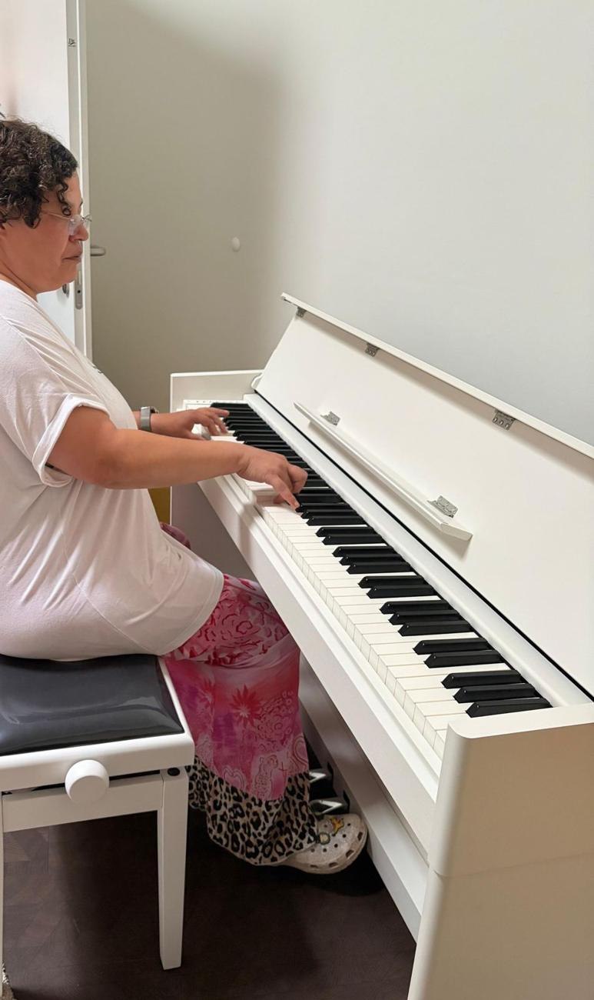
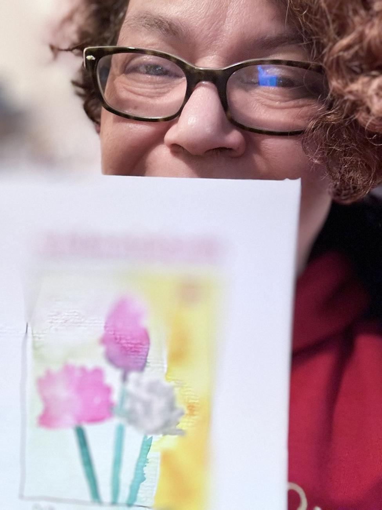
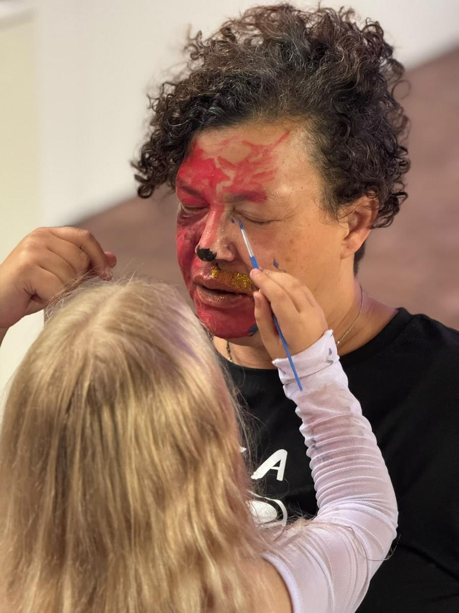
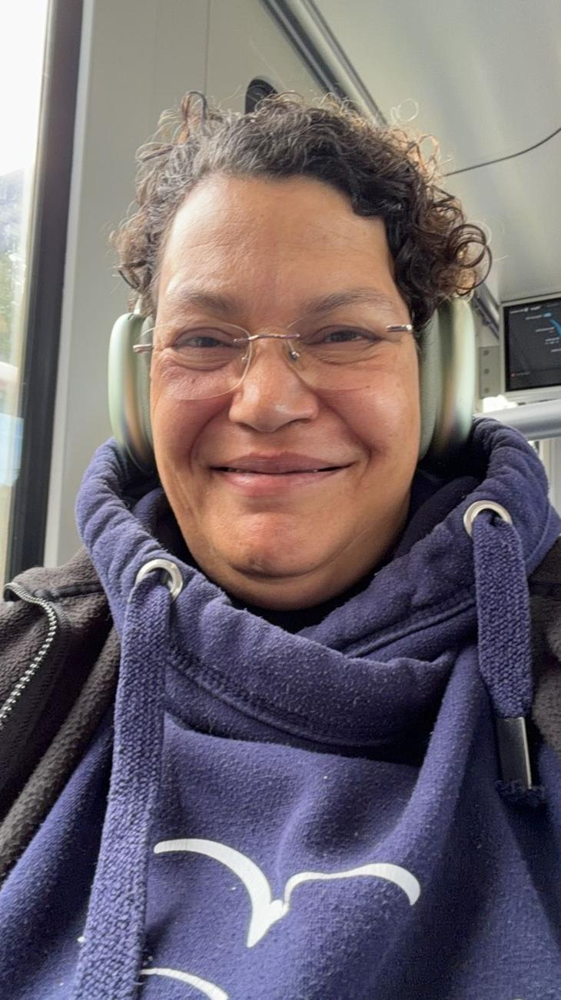

Vivian Glade, Bremerhaven
Musik.
Visuelle Geschichten.
Denken mit dem Stift.
Ich mache komplexe Themen verständlich. Mit Zeichnungen, Geschichten und Musik. Für Menschen, Teams und Organisationen, die etwas bewegen, vermitteln oder gemeinsam entwickeln wollen.

Musik & musikalische Leitung
Ich leite Chöre und Bands, schreibe Songs und Arrangements und entwickle musikalische Projekte von der Idee bis zur Aufführung, auf der Bühne und im Livestream.
- ChorleitungProjektchöre, Gospel-, Soul- und Popchöre, Kinder- und Jugendchor
- Komposition & ArrangementsFür Chor, Band und Kinderstimmen
- Musikalische KonzeptionKonzerte, Gottesdienste, Kulturveranstaltungen
- Probenarbeit & WorkshopsFür Chöre, Ensembles und Bands
- Livestream & hybride FormateKonzept, Regie, Bild und Ton für Konzerte, Gottesdienste und Talks
- Musikalische und künstlerische Leiterin der Glad(E)makers, Social Soul Choir Bremerhaven e. V.
- Gründerin der Gospelchöre Church People (1997) und Prayers & Preachers (1999–2008)
- Internationale Chorpartnerschaften in Indien, Südafrika, Italien und Israel



Graphic Recording & visuelle Geschichten
Ich übersetze Vorträge, Diskussionen und Veränderungen in Bilder, die man versteht und behält. Live auf Flipchart und Papierwand oder danach als ausgearbeitete Illustration. Ich zeichne für euch, ihr bleibt bei euren Inhalten.

Einfach. Klar. Gezeichnet.
- Thema
- Wie aus einem zu komplexen Thema ein Bild wird, das alle verstehen
- Methode
- Kernaussagen finden, in Symbole und Figuren übersetzen, mit Farbe ordnen
- Ergebnis
- Ein Blatt, das man in Sekunden liest und im Kopf behält
- Graphic RecordingBei Tagungen, Seminaren und Workshops
- Visuelle Protokolle & ZusammenfassungenErgebnisse auf einem Blatt
- Erklärbilder & Graphic StorytellingAbläufe, Konzepte, Veränderungsprozesse
- Sketchnotes für Bildung und KommunikationPlakate, Einladungen, Lernmaterial
Denken mit dem Stift
Hier geht es nicht ums schöne Zeichnen. Der Stift ist eine Methode: Sachverhalte sichtbar machen, Fragen schärfen, Perspektiven erkennen und Entscheidungen vorbereiten. Ich moderiere visuell und zeige Teams, wie sie selbst mit Bildern denken.
Klarheit
Ihr seht, worum es wirklich geht und was noch offen ist.
Gemeinsame Sprache
Unterschiedliche Sichtweisen bekommen ein Bild, über das man reden kann.
Eigene Werkzeuge
Alle gehen mit einfachen Bildmitteln raus, die im Alltag funktionieren.
Für Teams und Führungskräfte, Bildungseinrichtungen, Kirchen, Vereine und soziale Organisationen. Und für Einzelpersonen, die es selbst lernen wollen.
Workshop anfragen Für mich persönlichArbeiten
Tippe auf ein Bild für die Großansicht. Mit einem zweiten Tipp kannst du hineinzoomen und die Details lesen.
So arbeite ich
Am Klavier, an der Wand, am Aquarellkasten und am Regiepult.





Zuhören, verstehen, sichtbar machen.
Ich bin Musikerin, Komponistin und Künstlerin aus Bremerhaven. Seit fast 30 Jahren arbeite ich mit Gruppen: als Kantorin und Chorleiterin, in Kursen, Kulturprojekten und Gemeinwesenarbeit.
Ich male Aquarelle, zeichne Comics, Sketchnotes und Flipcharts und schreibe Songs. Weil ich gewohnt bin, Gruppen genau zuzuhören, finde ich schnell das Bild oder den Klang, der eure Gedanken zusammenhält.
Projekt anfragen
Erzähl mir kurz, worum es geht. Du bekommst ein individuelles Angebot. Eine Anfrage ist noch keine Buchung und verpflichtet zu nichts.